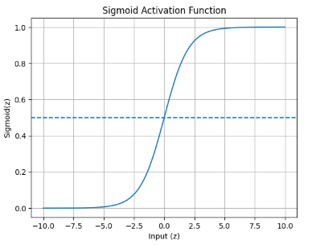
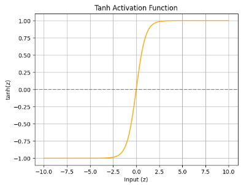
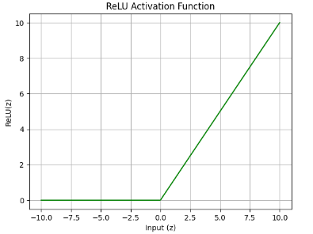

Activation Functions & Optimization
Theory
Neural network learning is governed by the interaction between activation functions and optimization algorithms. Activation functions introduce non-linearity into the network, enabling it to learn complex input–output mappings, while optimization algorithms determine how model parameters are updated to minimize the loss function. The choice of activation function and optimizer significantly affects gradient propagation, convergence speed, training stability, and overall model performance. This experiment studies these effects using a Multilayer Perceptron trained on the Fashion-MNIST dataset.
2.1 Activation Functions
In a Multilayer Perceptron (MLP), the activation function determines the output of a neuron based on the weighted sum of its inputs and bias. Activation functions transform the output of neurons before passing information to subsequent layers, thereby influencing the network's representational capability.
In this experiment, three widely used activation functions, namely Sigmoid, Hyperbolic Tangent (Tanh), and Rectified Linear Unit (ReLU), are studied to compare their mathematical properties and practical behavior during training on the Fashion-MNIST dataset.
Mathematical Formulation
Let the net input to a neuron be:
where represents weights, represents input features, and is the bias term. The output of the neuron is obtained by applying an activation function .
I. Sigmoid Activation Function: -
The sigmoid activation function is defined as:
The output of the sigmoid function lies in the range . It was commonly used in early neural networks due to its smooth and differentiable nature. However, for large positive or negative input values, the function saturates, resulting in very small gradients and slow convergence during training. Figure 1 shows the behavior of the Sigmoid activation function.

Figure 1: Sigmoid Activation Function
Merits of Sigmoid Activation Function
- Smooth and differentiable: The sigmoid function is continuously differentiable, which enables the use of gradient-based optimization techniques during training.
- Output in the range (0, 1): The output lies between 0 and 1, making it suitable for probability-based interpretation in binary classification problems.
- Simple mathematical formulation: The function is easy to understand and implement due to its straightforward mathematical expression.
Demerits of Sigmoid Activation Function
- Vanishing gradient problem: For large positive or negative input values, the gradients become extremely small, slowing down the learning process.
- Non-zero-centred output: The output is not zero-centred, which can cause inefficient weight updates and slower convergence during training.
- Saturation at extreme values: The function saturates at both ends of its output range, reducing its effectiveness in deep neural networks.
II. Hyperbolic Tangent (Tanh) Activation Function: -
The hyperbolic tangent activation function is given by:
The output range of tanh is , making it zero-centred. Compared to sigmoid, tanh provides better gradient flow near zero and generally results in faster convergence. However, it still suffers from gradient saturation for large input values. Figure 2 illustrates the behavior of the Tanh activation function.

Figure 2: Tanh Activation Function
Merits of Hyperbolic Tangent (Tanh) Activation Function
- Zero-centred output: Helps improve gradient flow and speeds up convergence compared to the sigmoid.
- Smooth and differentiable: The function supports stable gradient-based optimization due to its continuous differentiability.
- Stronger gradients near zero: Compared to sigmoid, tanh provides larger gradients around zero, which enhances learning efficiency.
Demerits of Hyperbolic Tangent (Tanh) Activation Function
- Vanishing gradient problem: Gradients become very small for large input values, which can slow down training in deeper networks.
- Saturation at extreme values: The function saturates at high positive and negative values, leading to reduced learning speed.
- Higher computational cost: The use of exponential functions makes tanh computationally more expensive than ReLU.
III. Rectified Linear Unit (ReLU): -
The Rectified Linear Unit activation function is defined as:
It can also be expressed in piecewise form as:
ReLU outputs zero for negative input values and a linear output for positive values. This behavior significantly reduces the vanishing gradient problem and improves training efficiency. Due to its simplicity and effectiveness, ReLU is widely used in modern deep learning models. Figure 3 shows the ReLU activation function curve.

Figure 3: ReLU Activation Function
Merits of ReLU Activation Function
- Introduces piecewise linearity: The composition of ReLU activations across multiple layers enables neural networks to model complex and non-linear decision boundaries.
- Efficient training: Reduces vanishing gradient issues and accelerates convergence.
- Sparsity in activations: ReLU activates only a subset of neurons, improving computational efficiency and potentially providing a mild regularizing effect.
- Simple and fast computation: The function involves only a threshold operation, making it computationally efficient.
Demerits of ReLU Activation Function
- Dying ReLU problem: Neurons can become inactive and permanently output zero, preventing further learning.
- Non-differentiable at zero: The function is not differentiable at zero, although this is handled using sub-gradients in practice.
- Unbounded output for positive inputs: The output for positive inputs is unbounded, which may lead to exploding activations if not properly controlled.
Comparison of Activation Functions
| Activation Function | Mathematical Expression | Output Range | Merits | Demerits |
|---|---|---|---|---|
| Sigmoid | Smooth and differentiable; suitable for probability-based outputs | Suffers from vanishing gradient and slow convergence | ||
| Tanh | Zero-centred output; better gradient flow than sigmoid | Vanishing gradient for large input values | ||
| ReLU | Fast convergence; reduces vanishing gradient problem | Dying ReLU problem; non-differentiable at zero |
2.2 Optimization Algorithms
Optimization algorithms are used to minimize a neural network's loss function by iteratively adjusting its parameters (weights and biases). During training, the optimizer determines the direction and magnitude of parameter updates based on the gradients of the loss function with respect to the model parameters. An efficient optimization algorithm ensures faster convergence, numerical stability, and improved generalization performance. In this experiment, Stochastic Gradient Descent (SGD) and Adaptive Moment Estimation (Adam) optimizers are studied and compared while training a Multilayer Perceptron (MLP) on the Fashion-MNIST dataset.
I. Stochastic Gradient Descent (SGD): -
Stochastic Gradient Descent is a fundamental optimization algorithm based on the theory of stochastic approximation, introduced by Herbert Robbins and Sutton Monro (1951). Unlike batch gradient descent, Stochastic Gradient Descent (SGD) updates model parameters using a single training example at a time, reducing computational cost and introducing stochasticity into the optimization process.
The parameter update rule is:
where is the learning rate.
SGD is simple and memory-efficient, and the randomness in updates can help escape shallow local minima. However, it is sensitive to the learning rate and may converge slowly or exhibit oscillations during training.
Merits of Stochastic Gradient Descent (SGD)
- Simple and easy to implement: Stochastic Gradient Descent has a straightforward update rule, making it easy to understand and implement.
- Memory efficient: SGD requires very little additional memory, as it does not store past gradients or extra parameters.
- Ability to escape shallow local minima: The stochastic nature of parameter updates introduces noise, which can help the algorithm escape shallow local minima.
- Suitable for large datasets: SGD processes one sample at a time, making it efficient for large-scale learning problems.
Demerits of Stochastic Gradient Descent (SGD)
- Sensitivity to learning rate: Choosing an inappropriate learning rate can result in slow convergence or unstable training.
- Slow convergence: SGD may require many iterations to reach the optimal solution, especially for complex problems.
- No adaptive learning rate: A fixed learning rate is used for all parameters, which may limit performance if not carefully tuned.
- Oscillations during training: SGD can exhibit oscillatory behavior near minima due to noisy gradient updates.
II. Adaptive Moment Estimation (Adam): -
Adaptive Moment Estimation (Adam) was proposed by Diederik P. Kingma and Jimmy Lei Ba (2015). It is an advanced optimization algorithm that combines the benefits of momentum-based methods and adaptive learning rate techniques. Adam adapts the learning rate for each parameter by maintaining exponentially decaying averages of past gradients and squared gradients.
The update rule for Adam is:
Where:
- is the model parameter at iteration
- is the updated parameter
- is the learning rate
- is the bias-corrected first moment estimate (mean of gradients)
- is the bias-corrected second moment estimate (mean of squared gradients)
- is a small constant added for numerical stability
Adam provides faster convergence, stable training, and performs well with noisy or sparse gradients. Due to these advantages, it is widely used in deep learning applications.
Merits of Adaptive Moment Estimation (Adam)
- Adaptive learning rates: Adam automatically adjusts the learning rate for each parameter based on first- and second-moment estimates.
- Fast convergence: The optimizer converges faster than traditional gradient-based methods, especially on deep networks.
- Robust to noisy gradients: Adam performs well even when gradients are noisy or sparse.
- Minimal hyperparameter tuning: Default parameter values often work well, reducing the need for extensive tuning.
Demerits of Adaptive Moment Estimation (Adam)
- Higher computational cost: Adam requires additional computations to maintain moving averages of gradients and squared gradients.
- Increased memory usage: Extra memory is needed to store moment estimates for each parameter.
- Risk of overfitting: Adam may converge too aggressively, leading to overfitting on training data.
- Less theoretical convergence guarantees: Compared to SGD, Adam has weaker theoretical convergence properties in some cases.
Comparison of Optimization Algorithms
| Optimization Algorithm | Learning Rate Type | Key Characteristics | Merits | Demerits |
|---|---|---|---|---|
| Stochastic Gradient Descent (SGD) | Fixed | Updates parameters using stochastic gradient updates | Simple, memory-efficient, good generalization | Sensitive to learning rate; slow convergence |
| Adaptive Moment Estimation (Adam) | Adaptive | Uses first and second moment estimates | Fast convergence; robust to noisy gradients | Higher computation and memory cost |